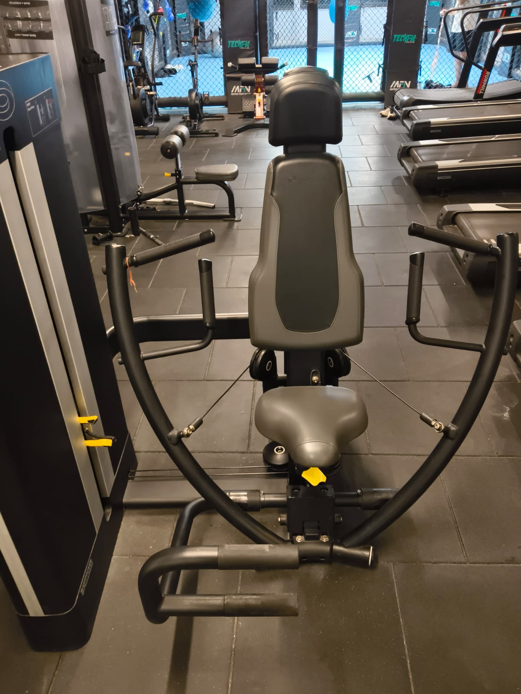
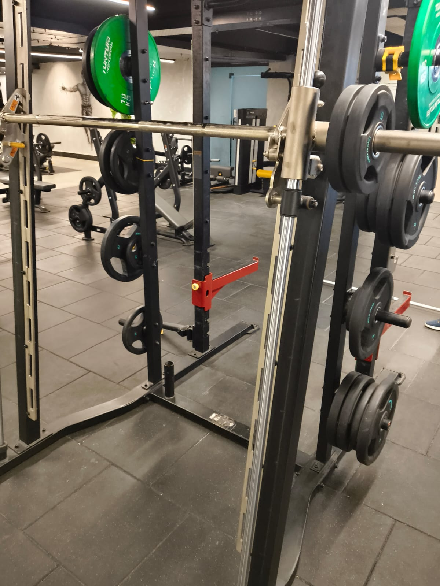
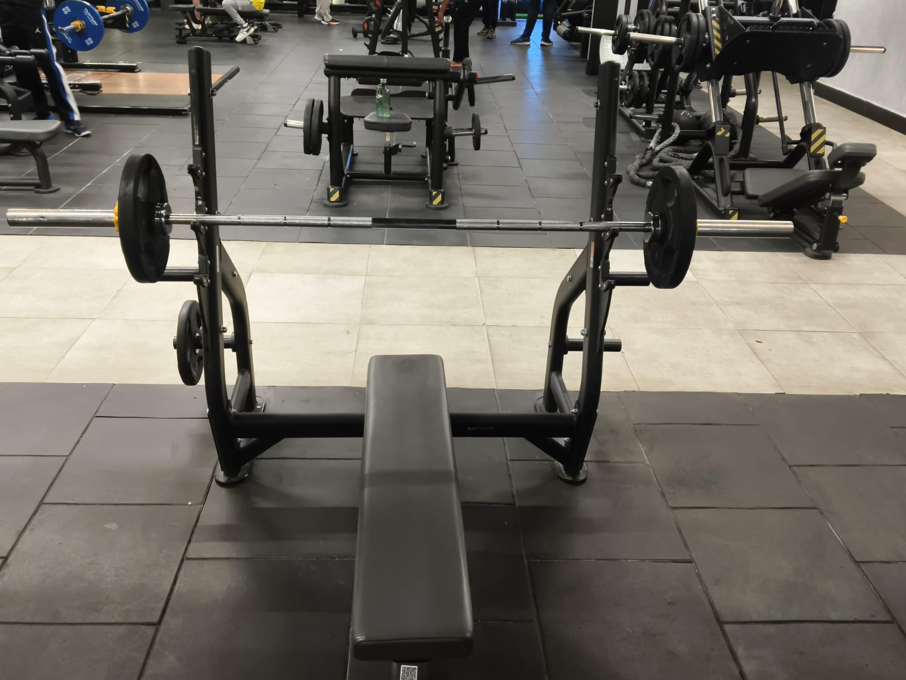

Chest Press Machine
Primary: Pectoralis Major · Secondary: Triceps, Front Delts
How to perform
- 1Adjust the seat so handles are at chest height.
- 2Sit back firmly, feet flat on the floor.
- 3Grip handles, elbows at 90°. Push forward until arms are nearly straight.
- 4Slowly return to start. Keep tension — don't let the weight stack touch.
Recommended
3 Sets × 10–12 Reps

Assisted Pull-Up & Dip Machine
Primary: Lower Chest · Secondary: Triceps, Shoulders
How to perform
- 1Select an assistance weight and place knees on the support pad.
- 2Grip the dip handles firmly and keep your chest slightly forward.
- 3Lower your body slowly until elbows form about a 90° angle.
- 4Push yourself back up while squeezing the chest and triceps.
Recommended
3 Sets × 12–15 Reps

Incline Bench Press
Primary: Upper Chest · Secondary: Front Delts, Triceps
How to perform
- 1Adjust the bench to an incline angle and lie back with feet flat on the floor.
- 2Grip the bar slightly wider than shoulder-width apart.
- 3Lower the bar slowly toward your upper chest while keeping elbows controlled.
- 4Press the bar upward until arms are extended, then repeat steadily.
Recommended
3 Sets × 8–12 Reps

Bench Press
Primary: Middle Chest · Secondary: Triceps, Front Delts
How to perform
- 1Lie flat on the bench with feet firmly planted on the floor.
- 2Grip the bar slightly wider than shoulder-width apart.
- 3Lower the bar slowly to the middle of your chest while keeping wrists straight.
- 4Push the bar upward until arms are fully extended, then repeat with control.
Recommended
3 Sets × 8–12 Reps